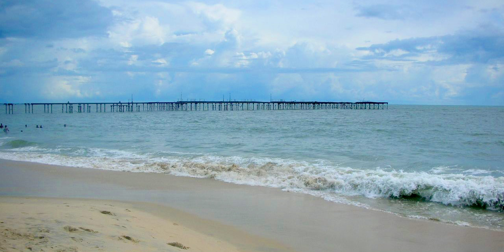

1. Kuttanad Backwaters
One of the best places to visit in Alleppey is Kuttanad Backwaters. This isn’t a place, it’s a phenomenon. It is a spectacular lagoon, surrounded by the beauty of lakes, rivers, canals, misty mountains and ethereal landscapes.
The experience of floating along the pristine backwaters on a houseboat is inexplicable.
You will have to live it to know it! The place is also known as the ‘Rice bowl of Kerala,’ for its stunning rice plantations.
If you are in Alleppey for a day, then this place should be your entire itinerary.Kuttanad is a backwater paradise and an ideal destination for a backwater cruise in Kerala. Its innumerable streams, channels, waterways and lakes make it possible to drift along in a houseboat and enjoy the scenic view of the Kerala countryside to take back home a memorable holiday experience.
Your houseboat will be trailed by flocks of ducks; coir workers processing coir look up from their tasks and wave as you pass by; otters and water birds can be seen on the edges of the waterways, and the sound of rippling water is a soothing lullaby as you sail along on a houseboat through the backwaters of Kuttanad.
Location: Kuttanad Taluk, Alappuzha district, Kerala—688504.
Entry Fee: INR 10 for lower
INR 15 for upper decks
Timings: 10.45 AM to 9.15 PM

2. Marari Beach
If you want to unwind completely, then the Marari Beach is a must-visit destination for you. The sleepy little village located close to Marari Beach is what makes this beach distinct and attractive, inviting people from all over the world to learn and understand the culture of the Indian state of Kerala.
This beautiful destination is known for being a beach symphony, thanks to its glistening sands and crystal clear waters. Watching sunrise and sunset here is quite a romantic experience that couples would love to enjoy. The place is rated as one of the World’s Top five Hammock Beaches by the National Geographic Survey.
Marari Beach is known for providing unique experiences to travelers. Taking them away from modern life, this beach gives them an opportunity to unwind and to enjoy the different facets and bounties of life and nature. The village by the sea is one of the best places to visit in Alleppey where one can go to learn more about the culture and heritage of Kerala.
Location: Alappuzha-Arthunkal- Cherthala, Thoppumpady road, Mararikulam, Alappuzha 688523
Timings: All day.
Entry fee: None.

3. Alleppey Beach
Glistening sands, crystal clear water, beautiful waves, enchanting sunrise, and sunset is what makes the Alappuzha or the Alleppey beach one of the best places to visit in Alleppey. This stunningly beautiful beach is known for its vast, endless stretches, thereby proving as a getaway for couples as well as families.
The remains of Alappuzha Sea Bridge also make it one of the most popular destinations for explorers, narrating the tales of those times when Alleppey was one of the most famous and important port destinations in the state of Kerala. The beach has beautiful stretches, making the visit to this beach quite ecstatic and enjoyable.
The beach is also close to Sea View Park, which offers an opportunity to enjoy and have fun through different types of boat rides. A picnic spot is located close-by, therefore families can enjoy a day off at the beach and picnic at that spot. The beach is often referred to as the ‘Venice of the East,’ because of its romantic location and popularity among European countries.
Location: Alappuzha 688007
Timings: All day.
Entry fee: None.

4.St. Andrew's Basilica Arthunkal
The largest shrine of St. Sebastian in the whole world, this church is one of the most popular Alleppey tourist places. The prestigious church was established in the 16th century and rebuilt in 1584, under Father Jacomo Fenicio, who was known to heal people with his touch.
It has been renovated many times in history but always it has always stood tall and strong. With its majestic architecture and proximity to the Arthunkal Beach, St. Andrew’s Basilica is probably the most popular spiritual edifice in Alleppey.
Location: Arthunkal Basilica, Arthunkal P.O, Cherthala, Alappuzha, Kerala – 688524.
Entry fee: None.
Timings: 5.30 AM to 6.30 AM

5.Kumarakom Bird Sanctuary
Spread over 14 acres, the Kumarakom Sanctuary is situated on the banks of the beautiful Lake Vembanad. You can witness a wide variety of birds, from the Himalayas, Siberia and all around the world.
Some of these birds are a Siberian stork, egret, darter, heron, golden woodpeckers, and teal. If you want to watch migratory birds, then the best time to visit the sanctuary is between November and February. Nature is found in abundance in this sanctuary.
Location: Kavanattinkara, Kumarakom, Kerala – 686563.
Entry fee: INR 50 for Indians.
INR 100 for foreigners.
Timings: 6.30 AM to 6.30 PM